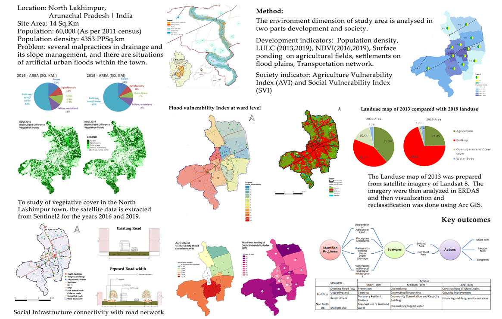
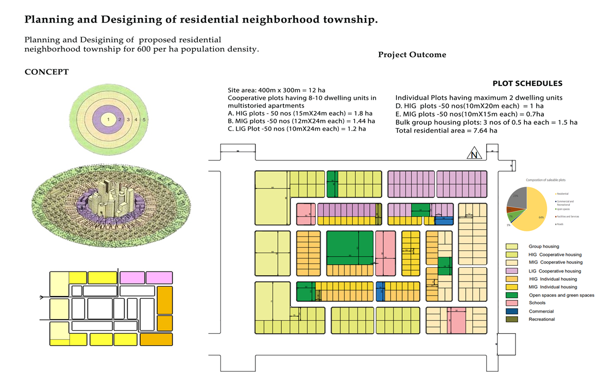

My Projects
Bristol Accessibility Dashboard
Leveraging Urban Data for Connected Cities
As cities grow, data-driven decision-making is essential for better land use, last-mile connectivity, and meeting community needs. In this project, I utilized Bristol Open Data to develop an interactive geospatial dashboard for Bristol city aimed at supporting policymakers, urban planners, and residents in making informed decisions. The dashboard provides postcode-level insights into building access to essential amenities—green spaces, schools, healthcare facilities, and bus stops—enabling users to assess how well different parts of the city are connected and identify areas that require infrastructure improvements.
Urban Greenery Analysis
Urban tree coverage - Kingston upon Thames
Urban greenery plays a vital role in enhancing air quality, reducing urban heat, and supporting physical and mental well-being. This project assessed ward-wise urban tree coverage in London, with a focused case study on Kingston upon Thames. Using the Overpass API, 27,521 building geometries were extracted from OpenStreetMap. Each building was evaluated for access to healthy green space by calculating proximity to trees in good condition. Buildings within 100 meters of such trees were classified as having green access. The analysis revealed that 13,906 households in Kingston lack a healthy tree within 100 meters.
Land use Land Cover Analysis
Spatiotemporal Analysis of Urban Growth
Urban growth is a global phenomenon that significantly impacts the environmental and socio-economic dimensions of cities. To accommodate population demands, natural landscapes are drastically transformed into built environments. Historical Land use analysis is an efficient method to understand the urban growth phases and how cities evolved. This project focuses on the urban growth of Staten Island from 1984 to 2024, analysing Landsat 8 data for land use changes. Using a deep learning model, identified a 24% loss in green spaces over the past 40 years and estimated by 2050 the study area will have only 3% greenspaces.
Tree mapping using deep learning model
SAMGeo and Segment Anything Model 2 (SAM 2) for automatic trees mapping
Trees are crucial in reducing land surface temperature, managing floods, beautifying landscapes, and enhancing ecosystem resilience, but we often treat them merely as locations. "Trees deserve more than being a point on our map‚Äù and they must be incorporated into environmental planning to maximize their benefits. Using the Segment Anything Model and QGIS, I mapped 18797 üå≥ trees in Sheffield . The tree dataset is crucial for monitoring tree health, estimating tree cover, deriving trees per capita and indices, and contributing to urban greening projects, forestry management, and environmental conservation.
Identifying Priority Places
Identifying priority places for physical activity is crucial for shaping healthier urban environments. It enables data-driven planning to enhance public health, lower carbon emissions through active travel, and foster inclusive, socially connected communities. This project focuses on a detailed analysis and the development of three distinct Physical Activity Indices for London boroughs - Indoor Physical activity, . Key factors influencing physical activity like access to facilities, public transport connectivity, safety, demographic factors, and walking behaviour integrated to construct the indices. The results highlight and identify the boroughs that require targeted interventions to encourage healthier, more active lifestyles.
Understanding Food Environments
Analysing unhealthy food advertisements to improve food choices - Leeds
Food advertising is a pervasive force shaping consumer behaviour, encompassing placement strategies, social influences, and adolescent responses. This project analysed food environments using advertisement data to understand the spatial distribution of food ads and how targeted marketing near educational spaces can influence dietary behaviours and health outcomes. The analysis uncovered critical links between advertising practices and societal factors, offering valuable insights for designing informed public health interventions and urban policies aimed at promoting healthier food environments.
Environmental Impact Assessment
Environmental Management and Disaster Resilience Plan, North Lakhimpur
This study involves an environmental and social vulnerability analysis of North Lakhimpur, covering an area of 14 sq. km. By integrating demographic data with NDVI, land use/land cover (LULC), groundwater and surface water levels, rainfall patterns, historical flood records, water quality, and transport network data, we developed key indices at the ward level to identify critical environmental and infrastructure challenges. Using image processing and spatial analysis techniques, the study assessed land cover changes from 2000 to 2018, and derived indices such as the Flood Vulnerability Index (FVI), Agricultural Vulnerability Index (AVI), and Social Vulnerability Index (SVI). My role in the project involved contributing to innovative strategies for natural flood management along the Subansiri River.
Crime Analysis
Spatial Analysis of Crime patterns to identify and predict future crime hotspots
One of the significant challenges pressuring urban environments is the rising crime rate, and increasing crimes highly impact the socio-economic systems of the cities. The City of London has an overall crime rate of 819 crimes per 1000 people in the year 2022, which is 762% higher compared to the overall London crime rate. This project focuses on crime patterns by identifying high-crime locations, analysis revealed 101 crime hotspots with over 50 reported crimes in proximity and 23 hotspots with more than 150 crimes. Building on this, incorporating 2021-2024 crime data predicted 324 potential future crime hotspots. These insights can support targeted policing strategies and urban planning for safer communities.
20-Minute Neighbourhoods

Analysisng the spatial distribution of 20-Minute Neighbourhoods
The concept of 20-minute neighbourhoods emphasizes the importance of building cities that prioritize walkability, accessibility, and inclusivity. To understand neighbourhoods at granular level in Bradford, an Accessibility score and Accessibility Index are derived for each 20-minute (800m walkable grid) neighbourhood and evaluated access to services (Health, Green Spaces, Local public transport, Grocery stores, restaurants, Banks, Education) and Desired services (recreational spaces, post office). This analysis provides actionable insights for policymakers, urban planners, and developers, enabling them to make data-driven decisions to create equitable and sustainable neighbourhoods.
Multicriteria Analysis - Site selection

Multicriteria spatial analysis is essential for identifying optimal residential sites that support sustainable urban development. This project focused on Bristol and aimed to identify residential buildings near schools, parks, and green spaces that also have high solar panel potential. These criteria promote access to education, encourage active lifestyles, and support renewable energy goals. Buffer analysis (300–500m) was used to determine accessibility to amenities, while overlay analysis combined these zones with solar suitability data. Residential buildings were categorized into three levels of suitability—most, moderate, and not suitable—based on spatial intersection. This approach helps urban planners prioritize areas for green infrastructure and policy interventions that improve quality of life and environmental outcomes.
Streamlit App
London Population Dashboard (1801–2021) Streamlit App
Understanding population growth is crucial for effective urban planning, resource allocation, and policy-making, as it helps anticipate infrastructure needs, and social services requirements. Developed an Interactive Streamlit App to visualize population data across London boroughs, enabling users to explore historical trends and demographic changes borough wise. Built Custom Features such as borough-based filtering, year-wise population growth calculation, enhancing usability for planners, researchers, and policymakers. This web application allows Borough-Wise Report Download, allowing users to export detailed population trend reports as CSV or PDF files for offline use and further analysis.
Land Use and Area Appraisal
Site Area: 0.14 Sq. Km | Location: Haridwar, Uttarakhand
In this project, I conducted comprehensive field surveys to analyze the land use patterns, built form, road networks, and public infrastructure of Veer Bhawan Nagar. Using AutoCAD and SketchUp, I developed accurate site layouts, land use maps, and 3D built form, helping to illustrate the area's vertical development patterns. I also designed clear, informative visuals and diagrams to communicate key findings. The study revealed a predominantly residential area with mixed land use and urban challenges such as poor drainage, lack of recreational spaces, and inefficient waste management were identified. Based on the analysis, I proposed practical recommendations for infrastructure upgrades and public space enhancement to support sustainable urban development.
Water Infrastructure Analysis

Site Area: 0.14 Sq. Km | Location: Dadpur Govindpur, Uttarakhand
This project focused on analyzing the transformation of land use and the associated water infrastructure challenges in Dadpur Govindpur over the 20 years after canal development. Using satellite imagery, spatial, and field survey data, temporal change of land use in the site area is identified. Image processing techniques were used to identify shift from predominantly agricultural land to residential development. Physical infrastructure assessments revealed issues such as open drains, waste dumping, and illegal construction. Development proposals to improve drainage systems, promoting rooftop farming and solar energy use, enhancing waste management, and empowering local communities through cottage industries were proposed.
Sustainable Mobility Analysis
Planning for sustainable mobility for Visakhapatnam GVMC area
This study aims to assess the urban transport system in Vishakhapatnam city and to evaluate the mobility of Vishakhapatnam concerning Sustainable transport components and indicators for considering potential changes. This research focuses on sustainable transport improvement of the GVMC area. In this research I developed Social, Environmental and Economic profiles of study area using Landsat 8, Survey data, open data and street Network data in ArcGIS and ERDAS IMAGINE. Visualized LULC, Transport network, Population density, Pollution, congestion Zones, transport accessibility profiles and evaluated them with Level of Service benchmarks. Recommended Street network improvements, Vehicular control zones, Bus stop locations, Pedestrian and cycling lane routes in the city.
Residential Neighborhood Township.
Site Area: 12 hectares | Location Concept: 15-minute walkable neighborhood
This neighborhood was designed to reflect the identity and character of its region by incorporating local assets and ensuring accessibility to essential amenities. The planning focused on creating a self-contained, vibrant, and inclusive community, promoting walkability, sustainability, and economic vitality. The layout included a balanced mix of cooperative and individual housing types across various income groups (HIG, MIG, LIG), along with bulk group housing. A total of 7.64 hectares was allocated for residential use, ensuring a diverse and well-integrated living environment. The design promotes walkability, livability, and economic vitality while enhancing quality of life for residents.